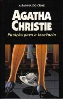

Punição para a Inocência
Ordeal by Innocence
Um incidente inesperado impede Jacko Argyle de cumprir pena de prisão perpétua pelo assassinato de sua mãe adotiva, a milionária Rachel Argyle: ele morre de pneumonia na cadeia, poucos meses depois da condenação. Mas algum tempo depois o caso, que já parecia encerrado, sofre uma súbita reviravolta com a chegada de um desconhecido, o estranho Dr. Calgary, que afirma a inocência de Jacko. Quem seria então o culpado? Caberá a Calgary desvendar o mistério, que a própria família Argyle insiste agora em esconder.